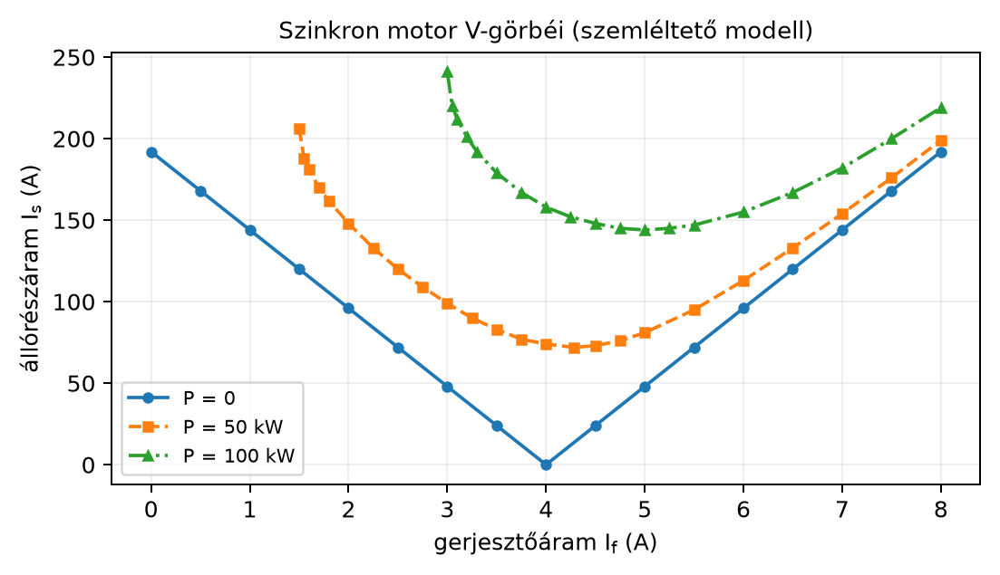
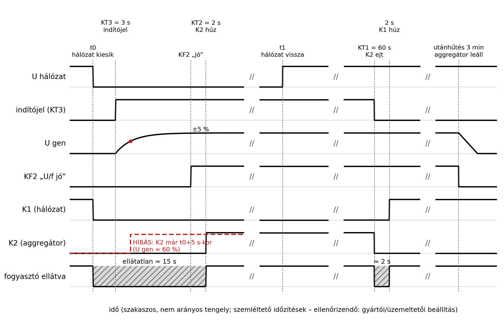

Statikus változat (mint a PDF-ben)
Képzeld el, hogy egy üzem tartalék áramforrásaként szinkron generátort hajtó dízelaggregátort szerelnek. A hálózati feszültség kimarad, a gép elindul, de a generátort csak akkor szabad a fogyasztói hálózatra kapcsolni, ha a feszültsége, frekvenciája és fázishelyzete megfelelő. Ha egy pillanattal korábban vagy később kapcsolsz, akkora áramlökés keletkezhet, amely tönkreteheti a kapcsolókészüléket, a generátor tekercselését vagy a hajtómotort. Ugyanez a kérdés merül fel akkor is, amikor egy szinkron gépet szándékosan párhuzamosan akarunk kötni a közcélú hálózattal.
A másik oldalról: ha egyszer már hálózaton üzemel a szinkron gép, a gerjesztőáram állításával nem a hatásos teljesítményt, hanem elsősorban a meddőteljesítményt tudod szabályozni. Ezért a szinkron gép nemcsak generátor, hanem „forgó fázisjavító” is lehet: felesleges meddőt ad le, vagy éppen meddőt vesz fel, attól függően, hogyan gerjeszted. Ezt a viselkedést mutatja a V-görbe, amelyet a gyakorlatban is használnak az üzemállapot megítélésére.
Ebben az alfejezetben a szinkronozás feltételeit, a V-görbét, a szinkron kompenzátort és az aggregátorok átkapcsolását tanulod meg. Biztonsági korlát. A hálózati feszültségű (230/400 V) munka, az aggregátor bekötése és a szinkronozás csak jogosult személy felügyeletével végezhető; tanulóként önállóan ne próbáld.
Egy háromfázisú szinkron generátort akkor kapcsolhatunk hálózatra, ha a kapcsoló két oldalán a feszültségek minden pillanatban közel azonosak. Ezt úgy képzelhetjük el, mint két fázort, amelyeknek a kapcsolás pillanatában egybe kell esniük. Ha a két fázor közötti szög nem nulla, a különbségük egy hajtó feszültséget hoz létre, amely a generátor és a hálózat közötti kis impedancián nagy áramot hajt. Ezért a szinkronozás nem más, mint a két feszültség-fázor egyeztetése.
A későbbiekben a V-görbe szemlélteti, hogy a gerjesztőáram változtatásával az állórészáram minimumon megy át. Ezt a görbét diagramon is bemutatjuk.
Definíció. Szinkronozásnak nevezzük azt a műveletet, amellyel egy szinkron generátort (vagy egy másik hálózatot) úgy kapcsolunk párhuzamosan a meglévő hálózattal, hogy a kapcsolási tranziens áram és nyomatéklökés a lehető legkisebb legyen.
Ahhoz, hogy a párhuzamos kapcsolás biztonságos legyen, az alábbi négy feltételnek kell egyidejűleg teljesülnie:
Törvény. Ha a két feszültség azonos nagyságú, de közöttük fázisszög van, a fázisfeszültségek különbségének nagysága:
ahol a fázisfeszültség. Ebből a közelítő kiegyenlítő áram:
ahol a generátor és a hálózat közötti eredő reaktancia fázisonként (a szinkron reaktancia és a hálózati impedancia összege). A képlet egyszerűsítő, mert a tranziens jelenségben a tranziens reaktancia is szerepet játszik, de a nagyságrendet jól mutatja.
Mérési módszerek. A szinkronozáshoz a gyakorlatban feszültségmérőt, frekvenciamérőt, fázissorrend-mérőt és szinkronoszkópot használnak. A szinkronoszkóp mutatja a fáziseltérést, és a kapcsolást a nulla fázisszög közelében lehet elvégezni. Nagyobb gépeknél automatikus szinkronozó berendezés végzi a kapcsolást. (ellenőrizendő: aktuális gyártói és hálózati engedélyesi előírások)
Lámpás szinkronozás (sötétkapcsolás). A tanműhelyben ma is bemutatott klasszikus módszerben a nyitott Q kapcsoló mindhárom pólusára egy-egy lámpát (H1, H2, H3) kötünk, mindegyiket azonos fázisok közé (L1–U1, L2–V1, L3–W1). Minden lámpa a hálózati és a generátor-fázisfeszültség különbségét kapja, azonos feszültségnagyságnál -t: -nál 0 V, -nál kb. 325 V, -nál 460 V. Ha a két frekvencia kissé eltér, a szög folyamatosan forog, és a lámpák frekvenciával lüktetnek (lebegés): a sötét pillanatok között idő telik el. A szabály egyszerű: ha mindhárom lámpa egyszerre sötét, és a lüktetés lassú, akkor kapcsolhatsz – a sötét szakasz közepén. Ha a fázissorrend felcserélt, a lámpák nem egyszerre sötétülnek el, hanem egymás után „körbefutnak”: ilyenkor tilos kapcsolni.
Az alábbi ábra a három jellegzetes állapotot és a lebegést mutatja; a HTML-kiadásban szimulátor változtatja a frekvenciakülönbséget, a feszültségarányt és a fázissorrendet.
A szimulátorban állítsd meg az animációt, és állítsd a -t 30°-ra: a „Kapcsolás most!” gomb a feladatgyűjteménybeli (27.2) példával egyezően kb. 238 A lökőáramot ír ki. Próbáld ki a felcserélt V–W fázissorrendet is: figyeld meg, hogy a lámpák soha nem sötétek egyszerre.
Feladat (B). A generátor frekvenciája 50,2 Hz, a hálózaté 50,0 Hz. Milyen időközönként sötétülnek el a lámpák? Megoldás: , – a lámpák 5 s-onként sötétülnek el; a kapcsolásra a sötét szakasz közepe a legalkalmasabb. Ha a lüktetés ennél gyorsabb, előbb a hajtógép fordulatszámával a frekvenciát kell közelíteni.
A Szinkron generátor és motor, gerjesztés alfejezetben láttuk, hogy a szinkron gép kapocsfeszültségét a gerjesztés és a fordulatszám határozza meg. Hálózatra kapcsolt gépen azonban a kapocsfeszültséget a hálózat rögzíti, ezért a gerjesztőáram változtatása nem a feszültséget, hanem a gép meddőteljesítményét változtatja meg.
Definíció. A V-görbe a hálózatra kapcsolt szinkron gép állórészáramát () ábrázolja a gerjesztőáram () függvényében, állandó hatásos teljesítmény mellett. A görbe V (vagy U) alakú, mert van egy gerjesztési érték, ahol az állórészáram minimális, és ettől jobbra-balra nő.
A V-görbét így értelmezzük:
Magyarázat. A szinkron motor fázisonkénti egyszerűsített feszültség-egyensúlya (fogyasztói előjellel, az állórész-ellenállást elhanyagolva): , ahol a gerjesztéstől függő belső feszültség, a hálózati fázisfeszültség, a szinkron reaktancia, az állórészáram. (Generátornál ugyanez alakban írható.) Az áram hatásos összetevőjét a tengelyterhelés (motornál) vagy a hajtógép (generátornál) szabja meg; a gerjesztés csak azt dönti el, hogy az áram a feszültséghez képest késik (induktív), fázisban van, vagy siet (kapacitív). Üresjárásban () az gerjesztésnél nem folyik meddő áram; terhelés alatt a ponthoz már tartozik, ezért a V-görbe minimuma a terheléssel nagyobb gerjesztés felé tolódik.
Ábra. A V-görbék szemléltető diagramja:

Az ábrán jól látszik, hogy nagyobb hatásos terhelésnél a V-görbe felfelé tolódik, mert a hatásos áramösszetevő nagyobb, és a minimuma (a pont) jobbra, nagyobb gerjesztés felé kerül. A görbék bal vége a stabilitási határ: ennél kisebb gerjesztésnél a terhelési szög elérné a 90°-ot, és a motor kiesne a szinkronizmusból.
A következő ábra a kidolgozott példa három állapotát (alulgerjesztett , , felülgerjesztett ) fázorábrán és a 100 kW-os V-görbén mutatja. Alulgerjesztésnél V, A (késő áram); -nél V V, A; felülgerjesztésnél V, A (siető áram). A HTML-kiadásban a gerjesztőáram és a terhelés csúszkával állítható, a fázorok és a munkapont élőben mozognak.
Továbbvitt eredmény. A V-görbe és a gerjesztés–meddőteljesítmény kapcsolat a Fázisjavítás méretezése alfejezetben is előkerül, mert a szinkron gép meddőteljesítmény-szabályozásával is lehet fázisjavítást végezni.
Definíció. A szinkron kompenzátor olyan szinkron motor, amelyet tengelyterhelés nélkül, erősen felülgerjesztve járatnak, és amelynek feladata meddőteljesítmény termelése (kapacitív fogyasztóként viselkedik) a hálózat számára.
A szinkron kompenzátor működése a V-görbe felülgerjesztett tartományán alapul. Mivel a tengelyterhelés kicsi, a hatásos teljesítményfelvétel csak a veszteségek fedezésére szolgál, a gép így szinte tisztán meddőteljesítményt ad le. Ezzel ugyanazt a hatást érjük el, mint egy kondenzátorteleppel, de a meddőteljesítmény folyamatosan, finoman szabályozható a gerjesztőárammal.
Összefüggés. Ha egy hálózatrész -ről -re javítandó, a szükséges meddőteljesítmény a Teljesítmények és teljesítménytényező alfejezetből ismert képlettel:
Ezt a meddőteljesítményt egy megfelelő névleges teljesítményű szinkron kompenzátorral is elő lehet állítani.
Definíció. Az aggregátor olyan gépcsoport, amelyben egy belső égésű motor (dízel, gáz) hajt egy generátort, rendszerint szinkron generátort. Az aggregátor lehet szigetüzemi tartalék áramforrás, vagy a hálózattal párhuzamosan üzemelő egység.
Egy tipikus dízel-aggregátor részeit a következő ábra számozza. A dízelmotor (4) hűtőjét (1) ventilátor hűti, égési levegőjét a légszűrő (2) szűri, a füstgáz a hangtompítós kipufogón (3) távozik. A motor a tengelykapcsolón (5) át hajtja a szinkron generátort (6); a generátoron ül a vezérlőpanel (7) a kijelzőkkel és a vészleállítóval (8), a kimeneti megszakító (9) és a csatlakozókapcsok (10). Az indítóakkumulátor (11) a motor indítómotorját táplálja. A gépcsoport rezgéscsillapítókon (12) áll az alapkereten, amelyben az üzemanyagtartály (13) van; a test a földelőcsatlakozáson (14) át kapcsolódik a földelő-/EPH-rendszerhez.
Telepítéskor három dologra figyelj: a kipufogógázt zárt térből a szabadba kell vezetni, a hűtőnek és az égési levegőnek elegendő friss levegő kell, és a rezgéscsillapítókon álló gépcsoporthoz a kábelt hajlékony szakasszal kell bekötni. A fogyasztói hálózatra az aggregátor csak az alább tárgyalt reteszelt átkapcsolón át csatlakozhat. A HTML-kiadásban a részek rámutatásra rövid magyarázatot kapnak.
A legtöbb épület- és ipari alkalmazásban az aggregátor szigetüzemben dolgozik: a fogyasztói hálózatot a közcélú hálózattól leválasztva látja el árammal. Ilyenkor nincs szinkronozási feltétel a hálózattal szemben, de a gépnek önállóan kell tartania a feszültséget és a frekvenciát. A hálózatról szigetüzemre történő átkapcsolás kritikus, mert a hálózati oldalt és az aggregátort soha nem szabad egyszerre a fogyasztóra kapcsolni.
Szabály. Az átkapcsolásnak reteszeltnek kell lennie: a hálózati kapcsoló (Q1) és az aggregátor kapcsoló (Q2) közül egyszerre csak az egyik lehet zárva, kivéve, ha a berendezés kifejezetten hálózati párhuzamos üzemre készült és a hálózati engedélyes ezt engedélyezte. A visszatáplálás a hálózatba szigetüzem esetén tilos, mert áramütést okozhat a hálózati munkát végző szerelőknek. (ellenőrizendő: aktuális hálózati engedélyesi előírások)
Kapcsolási rajz. Az alábbi egyszerűsített sémán látható egy hálózat-szigetüzem átkapcsoló elve:
![Aggregátor hálózat–szigetüzem átkapcsolás (egyvonalas rajz) - Egyvonalas elvi rajz, alapállapotban (Q1 és Q2 nyitva). A fogyasztói sín vagy a Q1 (hálózat), vagy a Q2 (aggregátor) kapcsolón át kap táplálást; a Q1 és a Q2 mechanikusan (szaggatott vonal) és villamosan reteszelt. A négy ferde vonalka a négy kapcsolt vezetőt (L1–L3, N) jelzi; a PE folytonos, nem kapcsolt (ellenőrizendő: MSZ HD 60364-5-551 és az elosztói előírás). A részletes fő- és vezérlőkör a 36.2 alfejezet teljes átkapcsoló lapján van.](assets/ve100-diagram-1.png)
Olvasd a rajzot felülről lefelé, két ágban. Bal ág: a hálózati betáp a P1 fogyasztásmérőn és a Q0 főkapcsolón át a Q1 négypólusú hálózati kapcsolóhoz jut. Jobb ág: a G1 aggregátor (GS) kimenetét először a saját Q2G generátorvédelmi megszakítója védi, majd a Q2 négypólusú aggregátorkapcsoló következik. A két ág a közös fogyasztói sínen találkozik, ahonnan az F1 főelosztó-védelem után a fogyasztói elosztó indul. A Q1 és a Q2 közötti szaggatott vonal a mechanikus reteszt jelöli: a sín mindig csak az egyik kapcsolón át kap táplálást, a két kapcsoló alapállapotban nyitva van rajzolva. A vezetéken a négy ferde vonalka a négy kapcsolt vezetőt (L1, L2, L3, N) jelzi; a PE-t nem kapcsoljuk. A reteszelést mechanikus és villamos úton (általában mindkettővel) valósítják meg; a részletes fő- és vezérlőköri lapot a Szünetmentes áramforrások, aggregátorok és akkumulátorok alfejezet adja. Ellenőrző kérdés: miért nem elég, ha csak a Q1 és a Q2 villamos (segédérintkezős) reteszelése van meg?
Gyakorlati sorrend (átkapcsolás hálózatról szigetüzemre):
Automatikus átkapcsolónál (ATS) ugyanez a sorrend időrelékkel zajlik. Az alábbi idődiagram egy hálózatkiesést és a hálózat visszatérését követi végig hét sávon: a hálózati feszültség, az aggregátor indítójele, a generátorfeszültség, a KF2 feszültség- és frekvenciafigyelő „jó” jele, a K1 hálózati és a K2 aggregátoroldali kontaktor, végül az, hogy a fogyasztó kap-e táplálást.

Olvasd le az ábráról a két ellátatlan szakaszt: a hálózat kiesésétől a K2 behúzásáig kb. 15 s (KT3 + felfutás + KT2), visszakapcsoláskor a két kontaktor közötti holtidő, kb. 2 s. Az ATS tehát nem szünetmentes: a kiesési időt csak egy szünetmentes áramforrás (UPS) hidalja át, ezt a Szünetmentes áramforrások, aggregátorok és akkumulátorok alfejezet tárgyalja. A piros szaggatott vonal a „Valós életbeli alkalmazás” hibáját mutatja: ott K2 már t0+5 s-kor behúzott, amikor a generátorfeszültség még csak kb. 60 % volt – a KF2 „jó” jele nélkül nem szabad a fogyasztót átkapcsolni. Ellenőrző kérdés: miért kell a KT2 holtidő a K1 elengedése és a K2 behúzása között, ha a két kontaktor amúgy is villamosan reteszelt?
Visszaálláskor a sorrend fordított: Q2 ki, Q1 visszakapcsolás, az aggregátor leállítása. A nullavezetőt is kapcsoló négy pólusú átkapcsolót azért használnak, hogy a hálózat és az aggregátor nullapontja ne maradjon összekötve szigetüzemben. Ez a földelési rendszertől is függ, ezért a pontos kialakítást a szabvány és a hálózati engedélyes előírásai szerint kell ellenőrizni.
A szinkron generátor szempontjából az átkapcsolás három kérdés. (1) Miért kell retesz? A generátor feszültsége szinkronozás nélkül tetszőleges fázishelyzetben áll a közcélú hálózatéhoz képest; ha a két forrás egyszerre kapcsolódna a fogyasztói sínre, a fáziskülönbségből akár a hálózati feszültség kétszeresének megfelelő kiegyenlítő áram folyna, amely a generátort, a tengelykapcsolót és a kapcsolókat is tönkreteheti – ezért a hálózati és az aggregátor oldali kapcsoló (automatikus átkapcsolóban a K1 és a K2 kontaktor) villamosan és mechanikusan is reteszelt. (2) Miért négypólusú? A szigetüzemű generátor csillagpontját a gépnél N–PE kötéssel földelik (saját TN-S rendszer); ha az N-et nem kapcsolnánk, a hálózati és a generátoroldali N–PE pont párhuzamosan összekötve maradna, és a nullavezető-áram megosztva a PE-n is folyna (az áram-védőkapcsolók tévesen oldanának, hibás szétválasztás). A 4P átkapcsoló az N-et is bontja. (3) Terhelésátvétel. Amikor a K2 rákapcsolja a fogyasztókat, a generátor feszültségét a feszültségszabályozó (AVR) a gerjesztés növelésével, frekvenciáját a dízelmotor fordulatszám-szabályozója tartja; nagy motorterhelés egyszerre ne kapcsolódjon rá, mert a feszültség és a frekvencia megbillenhet. A hálózat visszatérésekor a visszakapcsolást késleltetjük (a hálózat stabil legyen), a két kontaktor között holtidő van, és az aggregátor utánhűtés után áll le. Az elvet a fenti egyvonalas rajz mutatja (automatikus átkapcsolóban a Q1/Q2 kapcsoló helyén a K1/K2 kontaktor dolgozik), az időzítéseket a fenti idődiagram; a teljes fő- és vezérlőköri lapot (4P K1/K2, KF1/KF2 feszültségfigyelők, KT1–KT3 időrelék, retesz, jelzések) a Szünetmentes áramforrások, aggregátorok és akkumulátorok alfejezet (36.2) „Kontaktoros átkapcsoló kapcsolási rajza és működési sorrendje” része mutatja.
Tipikus hiba – TILOS! Hordozható aggregátort dugó–dugó kábellel („öngyilkos kábel”) egy fali aljzatba visszatáplálni szigorúan tilos. A szabadon maradt dugó csapjai feszültség alatt vannak; ha a főkapcsoló bekapcsolva marad, az aggregátor a közcélú hálózatba táplál vissza, és a hálózaton dolgozó szerelőt életveszélybe sodorja; a hálózat visszatérésekor pedig a két forrás szinkronozás nélkül összekapcsolódik. Háztartási aggregátort csak reteszelt (kézi vagy automatikus) átkapcsolón át szabad az épület hálózatára kötni.
A villanyszerelőt a lakossági gyakorlatban gyakran azzal keresik meg, hogy „kössön be egy aggregátort a házba”. A szakszerű megoldás egy kézi I–0–II átkapcsoló a fogyasztásmérő utáni szakaszban: az I állásban a ház a hálózatról, a II állásban az aggregátorról kap táplálást, a 0 állás mindkét oldalt leválasztja. Mivel egyetlen kezelőkar mozgatja mindkét oldalt, a két forrás soha nem kapcsolódhat egyszerre a fogyasztókra – ez a mechanikus retesz legegyszerűbb formája. Háromfázisú háznál négypólusú (L1–L3, N), egyfázisú háznál kétpólusú (L, N) átkapcsoló kell.
Az alábbi egyvonalas rajzon a bal ág a hálózati betáp (P1 fogyasztásmérő, Q0 főkapcsoló), a jobb ág a G1 hordozható aggregátor, amely hajlékony kábellel az X10 beépített CEE-csatlakozódugóhoz csatlakozik. A két ág a Q3 átkapcsolón találkozik, és a közös kimenet a Q4 áram-védőkapcsolón át jut a lakáselosztó sínjére.
![Hordozható aggregátor bekötése családi házba kézi I–0–II átkapcsolóval (egyvonalas rajz) - Alapállapot: Q3 a 0 állásban (mindkét oldal nyitva). Q3 egyetlen kezelőkarral működő négypólusú I–0–II átkapcsoló (a két kapcsolórész közötti szaggatott vonal a közös mechanikus működtetés): I = hálózat, 0 = mindkét oldal leválasztva, II = aggregátor. A négy ferde vonalka a négy kapcsolt vezetőt (L1–L3, N) jelöli; egyfázisú változatnál kétpólusú (L, N) átkapcsoló. A PE nem kapcsolt: a mérő utáni PE-sínről és az X10 PE-csapjáról közvetlenül a lakáselosztó PE-sínjére fut. Szemléltető kialakítás – ellenőrizendő: MSZ HD 60364-5-551, elosztói csatlakozási feltételek, gyártói utasítás.](assets/ve100-diagram-2.png)
Kövesd végig a rajzot mindhárom állásban: I állásban a sín a Q0-n és a Q3 (I) kapcsolórészen át kap feszültséget, az X10 dugó csapjai feszültségmentesek; 0 állásban a sín és az X10 is feszültségmentes a ház felől; II állásban csak a G1 táplál, és a hálózati oldal (a mérő felé) le van választva. Ellenőrző kérdés: miért beépített dugó (és nem aljzat) az X10 a falon, és mi történne fordított kialakításnál?
Kapocsbekötési táblázat (négypólusú I–0–II átkapcsoló). A kapocsszámozás gyártófüggő; az alábbi a jellemző kiosztás (ellenőrizendő: a gyártói bekötési rajz).
| Pólus | I oldal (hálózat, a mérő és a Q0 után) | II oldal (aggregátor, X10) | Közös kimenet (a Q4 és a lakáselosztó felé) |
|---|---|---|---|
| 1. pólus | L1 | X10: L1 | L1 |
| 2. pólus | L2 | X10: L2 | L2 |
| 3. pólus | L3 | X10: L3 | L3 |
| 4. pólus | N | X10: N | N |
| PE | nem kapcsolt: a mérő utáni PE-sínről | nem kapcsolt: X10 PE-csap | közvetlenül a lakáselosztó PE-sínjére |
Földelési kérdések. A kis, különösen az inverteres hordozható aggregátorok kimenete gyakran IT-rendszerű (a tekercselés csillagpontja vagy egyik vége nincs a testhez kötve). Ilyen kimenet az épület TN-S hálózatára csak akkor köthető, ha a gyártó ezt megengedi, és a generátornál az N–PE kötés (TN-S szigetüzem) ki van alakítva – csak ekkor folyik testzárlatkor különbözeti áram a Q4 áram-védőkapcsolón át, vagyis csak ekkor működik az RCD-s védelem. Ezért kell az N-t is kapcsolni: a hálózat és az aggregátor N–PE pontja szigetüzemben nem maradhat párhuzamosan összekötve. Egyfázisú generátor háromfázisú háznál csak a kijelölt egyfázisú áramköröket láthatja el (külön kijelölt „aggregátoros” leágazások); a három fázist nem szabad egy generátorkimenetről összekötni. (ellenőrizendő: MSZ HD 60364-5-551, MSZ HD 60364-4-41, gyártói utasítás)
Gyakorlati útmutató – kézi átkapcsoló beépítése.
Biztonság: a munka a feszültségmentesítés öt szabálya szerint, a mérő utáni szakasz leválasztásával kezdődik (leválasztás; visszakapcsolás elleni biztosítás; a feszültségmentesség megállapítása; földelés és rövidre zárás, ahol előírt; a közeli feszültség alatti részek letakarása). A mérő előtti (plombált) részen a hálózati engedélyes engedélye nélkül nem dolgozunk.
Anyaglista: négypólusú I–0–II átkapcsoló (40 A); beépített CEE-csatlakozódugó 16 A, 5P (3P+N+PE), IP44 (egyfázisnál 3P: L+N+PE); 5×2,5 mm² vezeték az X10 és a Q3 között; kábelvégek, érvéghüvelyek; jelölőtábla „Visszatáplálás veszélye – aggregátor”; az aggregátorhoz H07RN-F hajlékony kábel CEE-aljzattal.
Lépések:
Szabvány. Az épület- és ipari tartalék áramforrások követelményeit a kisfeszültségű villamos berendezések szabványcsaládja (MSZ HD 60364 sorozat) és a hálózati engedélyes csatlakozási feltételei tartalmazzák. A gépcsoport villamos része az MSZ EN 60204-1 hatálya alá is tartozhat, ha gépi berendezés része. A szinkron gépek vizsgálati és adattáblás követelményei az MSZ EN 60034 sorozatban találhatók. (ellenőrizendő: aktuális szabványkiadások és szakaszok)
Továbbvitt eredmény. Az aggregátor hálózat-szigetüzem átkapcsolásának alapelveit a Szünetmentes áramforrások, aggregátorok és akkumulátorok alfejezet használja tovább, ahol az UPS és aggregátor együttműködését is tárgyaljuk.
Egy közepes méretű üzemben a fő elosztóba dízel aggregátort szereltek tartalék forrásként. Az első próbaüzemben a hálózat lekapcsolása után az automatikus átkapcsoló Q1-et kikapcsolta, Q2-t bekapcsolta, de az aggregátor feszültsége és frekvenciája még nem állt be, ezért a fogyasztói oldalon alulfeszültség és frekvenciaingadozás lépett fel, ami néhány vezérlőberendezés hibáját okozta.
A hibát az okozta, hogy a vezérlés nem várt a stabil feszültségre és frekvenciára. A javítás során feszültségfigyelő relét és feszültség-frekvencia ellenőrző fokozatot iktattak az indítási sorrendbe, valamint a Q2 kapcsolót késleltetve csak akkor engedték zárni, ha a generátor feszültsége a névleges ±5%-os sávon belül volt, a frekvencia pedig 49,5–50,5 Hz között. Ezután a próbaüzem már megbízhatóan működött.
A tanulság: az átkapcsolás nem csak kapcsolók kérdése; a generátor üzemkész állapotát is figyelni kell, mielőtt a fogyasztói hálózatra kapcsoljuk.
Szinkronozásnál rossz fázissorrend. Ha a fázissorrendet nem ellenőrzik, a kapcsolás után a generátor és a hálózat mágneses tere ellentétes irányba forog. A fellépő áramlökés és mechanikai nyomaték tönkreteheti a tengelykapcsolót, a kapcsolókészüléket. A helyes gyakorlat: minden párhuzamos kapcsolás előtt fázissorrend-mérést végezni.
A V-görbe félreértése. Sokan azt hiszik, hogy a gerjesztőáram növelése a hatásos teljesítményt növeli. Valójában a gerjesztés elsősorban a meddőteljesítményt állítja; a hatásos teljesítményt a hajtógép (turbina, dízelmotor) szabja meg.
Aggregátor átkapcsoló reteszelés nélkül. Ha a hálózati és az aggregátorkapcsoló egyszerre bekapcsolhat, az aggregátor visszatáplálhat a hálózatba, ami életveszélyes és káros. Mindig reteszelést kell alkalmazni, és a nullavezetőt is megfelelően kell kapcsolni.
A szigetüzemben hálózati szinkronozást várnak el. Szigetüzemben nincs hálózat, ezért nincs szinkronozás; a gépnek önálló szabályozással kell tartania a feszültséget és frekvenciát. A hálózatra visszakapcsolás előtt viszont már szükség lehet szinkronozásra, ha párhuzamos üzemre készül.
Aggregátoros berendezésnek két forrása van. Minden szerelési beavatkozás előtt: (1) válaszd le a hálózati és az aggregátor oldalt is, (2) állítsd az aggregátor vezérlését tiltott állásba, és akadályozd meg az automatikus indítást (lásd a 6. feladat megoldását), (3) reteszeld a visszakapcsolás ellen, (4) mindkét oldalon ellenőrizd a feszültségmentességet, majd alkalmazd az öt biztonsági szabály többi lépését (több forrás és visszatáplálás: Villamos munkavégzés biztonsága: az öt szabály és a munkaengedély). A táblázatban (J) a feszültség alatti mérés: csak jogosult személy végezheti.
| Jelenség | Lehetséges ok | Ellenőrzés, mérés | Javítás |
|---|---|---|---|
| az aggregátor nem indul hálózatkiesésnél | vezérlés kézi vagy tiltott állásban, lemerült indítóakkumulátor, KT3 beállítás | vezérlőkijelző; akkumulátorfeszültség multiméterrel | üzemmód, akkumulátor, beállítás |
| az aggregátor jár, de K2 nem húz be | KF2 „U/f jó” jele hiányzik (a gép nem állt be), vagy a K1 21–22 retesz nem zár (hegedt K1) | (J) U és f; vezérlőfeszültség a K2 áramút pontjain | AVR, fordulatszabályzó, KF2 beállítás; hegedt K1 cseréje |
| átkapcsolás után a motorok fordítva forognak | eltérő fázissorrend | (J) fázissorrend-mérő a sínen mindkét forrásról | a generátor kimenetén két fázis cseréje (leválasztva) |
| aggregátorról az RCD azonnal kiold | kettős N–PE kötés (3P átkapcsoló, N összekötve), N-áram a PE-n | (J) lakatfogó a PE-n és az N–PE kötésen; az átkapcsoló pólusszáma | 4P átkapcsoló, egyetlen N–PE pont az aktív forrásnál |
| aggregátorról a kismegszakító testzárlatnál nem oldana ki időben | a generátor zárlati árama kicsi (pl. ) | (J) mérése generátoros üzemben, összevetése az kioldóárammal | kisebb vagy B jelleg, RCD, tartós zárlati áramot adó gerjesztés |
| visszatérés után K1 nem kapcsol vissza | KT1 késleltetés még fut, vagy az A1 hálózatfigyelő aszimmetria miatt nem engedélyez | A1 jelzése; (J) mindhárom fázisfeszültség | beállítás ellenőrzése, hálózati hiba bejelentése |
| terhelés rákapcsolásakor a frekvencia 46 Hz-re esik | túl nagy terheléslépcső (motorindítás) | (J) frekvencia és áram rögzítése rákapcsoláskor | terhelés lépcsőzése, lágyabb indítási mód, nagyobb gép |
| tartósan 180 V, 45 Hz (6. feladat) | túlterhelés, hibás fordulatszám- vagy feszültségszabályozó | (J) terhelőáram, frekvencia, feszültség | terhelés csökkentése, a gép szervizelése |
A jelleggörbékről a Kismegszakítók és kioldási jelleggörbék (B, C, D), a generátoros üzem összefüggéseiről a Szünetmentes áramforrások, aggregátorok és akkumulátorok alfejezet szól.
Esettanulmány (szemléltető mért értékek). Egy 30 kVA-es aggregátor () szigetüzemében az RCD rendszeresen kiold. Lakatfogóval a generátornál lévő N–PE kötés környezetében 12 A N-vezető áramot és 9 A PE-vezető áramot mérnek. A PE-n normál üzemben nem folyhat ilyen áram. Vizsgálat (leválasztva): a főelosztóban is van N–PE kötés, az átkapcsoló pedig hárompólusú, tehát a két N–PE pont az összekötött nullán át párhuzamosan áll, és a nullavezető árama a PE-n is visszafolyik. Javítás: négypólusú átkapcsoló beépítése, a tervezett N–PE pontok megtartásával. Utána a mért PE-áram 0 A, az RCD próbája generátoros üzemben is rendben. Tanulság: az RCD kioldása itt nem „érzékeny készülék”, hanem hibás N-kapcsolás jele; az RCD-t kiiktatni tilos.
Gyakorlás: ennek az alfejezetnek a kidolgozott példái, gyakorlatai és megoldással ellátott feladatai az Összefoglaló feladatgyűjtemény villanyszerelő tanulóknak című kötet 27.2 szakaszában találhatók.
A szinkron gép hálózatra kapcsolásának négy feltétele: feszültségnagyság, frekvencia, fázissorrend és fázisszög egyezése. A fázisszögeltérés hatására a különbségi feszültség a gép és hálózat közötti reaktancián nagy áramlökést hoz létre. Hálózatra kapcsolt szinkron gépen a gerjesztőáram a meddőteljesítményt szabályozza; a V-görbe az állórészáramot mutatja a gerjesztőáram függvényében, állandó hatásos teljesítmény mellett. Alulgerjesztve a gép induktív, felülgerjesztve kapacitív jellegű. Erre épül a szinkron kompenzátor, amely felülgerjesztett, terhelés nélküli motorral állít elő szabályozható meddőteljesítményt. Az aggregátorok szigetüzemű átkapcsolásakor reteszelt kapcsolókkal kell megakadályozni a hálózattal való egyidejű összeköttetést és a visszatáplálást. Továbbvitt eredmény. Az átkapcsolás elvét a Szünetmentes áramforrások, aggregátorok és akkumulátorok alfejezet használja tovább.
A leírt fizikai összefüggések és a V-görbe értelmezése a klasszikus villamosgépes ismereteken alapul. Az alkalmazott szabványok – MSZ HD 60364 sorozat, MSZ EN 60204-1, MSZ EN 60034 – pontos szakaszait és a hálózati engedélyes aktuális előírásait a kiadás előtt ellenőrizni kell. A konkrét reaktanciaértékek, a szinkronozási módszerek és a szinkron kompenzátor kiválasztási adatai gyártói adatlapokon ellenőrizendők.